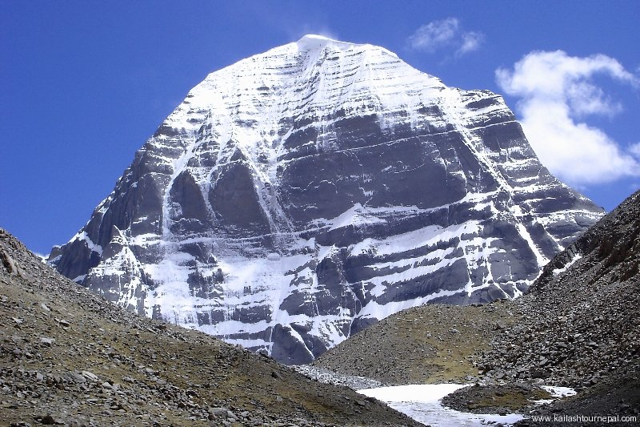
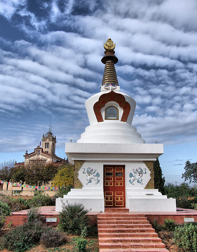
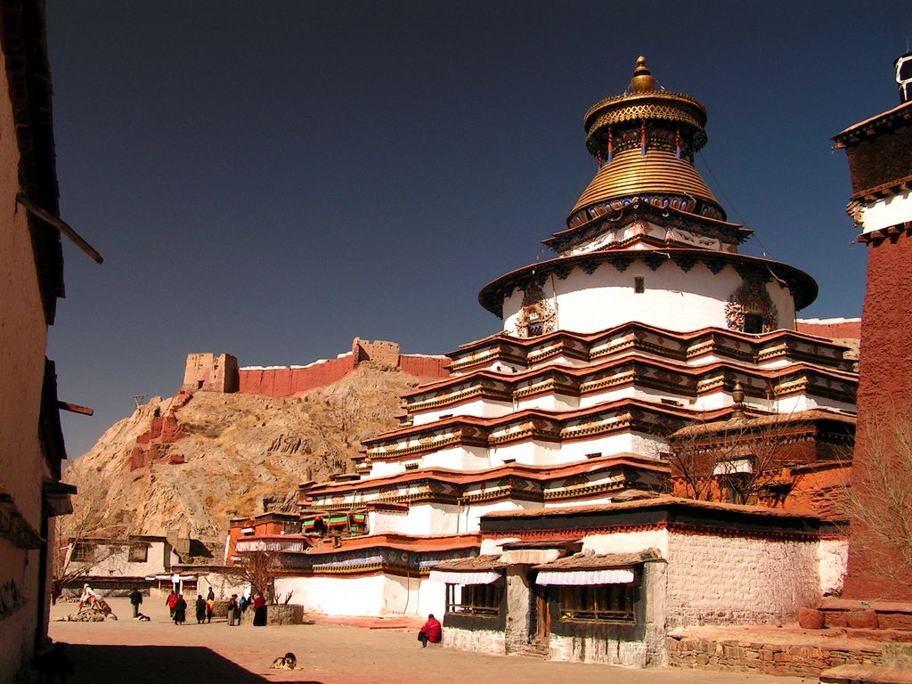

Muntanya Kailash
Sagrat per a milions de persones, el icònica muntanya Kailash és potser la muntanya més enigmàtica d’Àsia. Rep pelegrins de tot arreu del món, ja que no només és sagrada per als budistes sinó també per hinduistes i jainistes. Pots unir-te a qualsevol dels grups de pelegrins abans de descansar a les ribes del llac Manasarovar, en l’altiplà tibetà.
També te noms com la piràmide més gran de totes, o la punta de l’iceberg d’una muntanya subterrània.
El monestir de Sakya
El monestir de Sakya no sembla, com és habitual en molts altres monestirs tibetans, un extens poble amb nombroses cases al voltant d’uns pocs i grans edificis. El de Sakya és un monestir de base quadrada, on s’amunteguen els edificis i sales monàstiques deixant poc espai entre elles i envoltat el conjunt per un mur exterior gruix i alt que disposa de diverses talaies.
El motiu d’aquesta estructura, és que el monestir de Sakya es va construir en l’any 1268 amb finalitats defensives.
Regne tibetà de Guge
Les ruïnes de l’antic regne tibetà de Guge recorden clarament al palau de Potala, encara que estiguin a gairebé 1.800 quilòmetres de Lasha, la capital del Tibet. No obstant això, aquest poderós regne va ser perdent puixança al llarg dels segles fins a gairebé desaparèixer del tot.
Guge va ser fundat al segle X. Els seus capitals es trobaven en Tholing i Tsaparang. El seu fundador va ser el besnét de Glang Darma, l’últim rei del regne tibetà de Tub. El fill primogènit d’aquest rei es va convertir en governador de Mar-yul (Ladakh), i els seus dos fills més joves van governar la zona oest de Tibet, fundant el regne de Guge i Pu-hrang.

Palau Potala
El Potala o temple de Lhasa és la màxima expressió de l’arquitectura tibetana i residència dels Dalai Lama des que Lozang Gyatso ho fundés al segle XVII (any 1648) a Lhasa, la capital del Tibet, fins a 1959, data en la qual el catorzè Dalai Lama es va exiliar a Dharamsala, Índia, després d’una revolta popular contra Xina.
El monument es situa sobre la muntanya anomenada Hongshan, a una altitud de 3.650 metres sobre el nivell del mar. Abasta una àrea de 410.000 metres quadrats i té una superfície edificada de 130.000 metres quadrats.
El palau sempre va tenir usos seculars, contenint habitacions, oficines, un seminari i una casa d’impremta. Un pati central conegut com Deyangshar separa les habitacions de l’Dalai Lama i dels seus monjos del Palau Roig, la part del Potala dedicada completament a l’estudi i la pregària. Aquest conté el stupa daurada del vuitè Dalai Lama, la sala d’assemblees monacal, nombroses capelles i santuaris, i biblioteques amb importants escrits budistes, com la Kangyur, amb 108 volums, o l’Tengyur, amb 225. L’edifici groc al costat del Palau blanc alberga les grans banderes amb símbols sagrats que es pengen a la façana meridional durant els festivals de Cap d’Any.

Kumbum
Un Kumbum és un agregat de diversos pisos de capelles budistes al budisme tibetà. El Kumbum més famós forma part del Monestir Palcho.
El primer va ser fundat l’any 1427 per un príncep de Gyantse. Consta de nou lhakang o nivells, de 35 m d’alçada, coronada per una cúpula d’or, i conté 77 capelles que voregen les seves parets. La majoria deles seves estàtues van ser danyades durant la Revolució Cultural, però des de llavors han estat reemplaçades per imatges d’argila, tot i que no tenen el mèrit artístic dels originals. Els murals del segle XIV, que mostren influències newar i xineses, van sobreviure en millors condicions.
El Kumbum o gran stupa gomang ( “de moltes portes”) en Gyantse és un mandala tridimensional destinat a representar el cosmos budista. El Kumbum, igual que altres mandales, que són retratats amb un cercle dins d’un quadrat, permet al devot participar en la percepció budista de l’univers i poder descriure el seu potencial a mesura que es mouen a través d’ell. Els mandales estan destinats a ajudar a un individu en el camí cap a la il·luminació. El Kumbum té una enorme varietat d’imatges de deïtats a través de la seva estructura, amb un Vajradhara i el Buda còsmic al cim.
